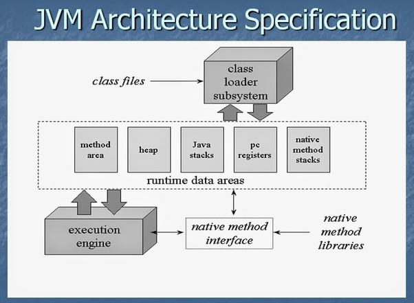

JVM is Java Virtual machine, where java runs. JVM needs to be installed on your machine depending on what platform do you have and what version of it (like windows 8, windows 10, ubuntu 14 etc. ) JVMs are available for many hardware and software platforms. JVM, JRE and JDK are platform dependent because configuration of each OS differs. But, Java is platform independent.

It is like an emulator. You install the emulator in different machines and all the installers are different (.exe,.rpm.deb etc.) and the java program then runs on this emulator. Which makes java platform independent because java does not run directly on windows or linux. It runs on the jvm which you have to install separately.
IN SHORT- The JVM must be platform dependent to allow your Java to run on the specific platform.